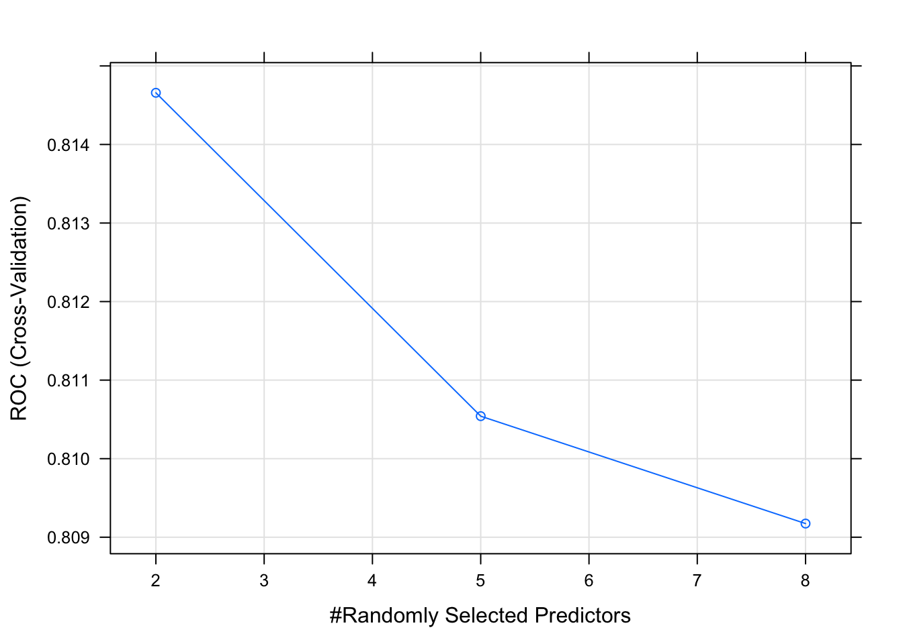

Chapter 5 Is There a Better Way ?
In R, as well as with Python, there are a growing number of packages available to help simplify repetitive processes. Building predictive models is no exception especially given that so many sub processes are involved such as splitting data, building a model, making a prediction, comparing it to the labelled data, and so on. The caret package provides an easy point of entry into the world of predictive modeling. It provides the following features:
- Streamlined and consistent syntax for more than
200 different models
- Can implement any of the 238 different methods using a single function
- Easy data splitting to simplify the creation of train / test pairs
- Realistic model estimates through built-in resampling
- Convenient feature importance determination
- Easy selection of different performance metrics (e.g. "ROC","Accuracy", "Sensitivity")
- Automated and semi-automated parameter tuning
- Simplifed comparison of different modelsThe caret package was designed specifically for predictive modeling and, in particular, to provide an intuitive approach to creating, managing, and comparing different models emerging from various methods. Let’s work through our previous examples using functions from caret.
5.1 Data Splitting Using Caret
Let’s split the data into a training / test pair. The caret package provides some useful functions for this one of which is the CreateDataPartition function.
idx <- createDataPartition(pm$diabetes,
p=.80,
list=FALSE)
Train <- pm[idx,]
Test <- pm[-idx,]
nrow(Train)## [1] 615Now we can use this to create a training object with caret. We’ll create a GLM model similar to the one we’ve already created. The primary, and most frequently used, function in caret is the train function. In this example we’ll use it build a model using the glm method. We will also specify that “Accuracy” will be the preferred performance measure.
## Generalized Linear Model
##
## 615 samples
## 8 predictor
## 2 classes: 'neg', 'pos'
##
## No pre-processing
## Resampling: Bootstrapped (25 reps)
## Summary of sample sizes: 615, 615, 615, 615, 615, 615, ...
## Resampling results:
##
## Accuracy Kappa
## 0.7590927 0.44495035.2 Specifying Control Options
We can even request cross fold validation without having to write our own function to do this. To do this requires the specification of a “control” object which contains information that we would like for the train function to consider as it does its work.
Not every invocation of train requires an associated trainControl object although as you become more experienced building models, you will frequently use this approach.
control <- trainControl(method = "cv", number = 5)
myglm_caret <- train(diabetes ~ .,
data = Train,
method = "glm",
metric = "Accuracy",
trControl = control)
myglm_caret## Generalized Linear Model
##
## 615 samples
## 8 predictor
## 2 classes: 'neg', 'pos'
##
## No pre-processing
## Resampling: Cross-Validated (5 fold)
## Summary of sample sizes: 492, 492, 492, 492, 492
## Resampling results:
##
## Accuracy Kappa
## 0.7642276 0.45874165.3 Inspecting The Model
The object returned by caret has a great deal of information packed into it much of which is there to support reproducibility. Some key aspects of the object include, in this case, the Accuracy computation for each fold.
## Accuracy Kappa Resample
## 1 0.7967480 0.5249498 Fold1
## 2 0.7154472 0.3424469 Fold2
## 3 0.7642276 0.4551703 Fold3
## 4 0.7723577 0.4884135 Fold4
## 5 0.7723577 0.4827275 Fold5## parameter Accuracy Kappa AccuracySD KappaSD
## 1 none 0.7642276 0.4587416 0.02987183 0.06959971# Note that the final reported Accuracy metric is simply the average of
# the reported Accuracy values for each fold
myglm_caret$results[2] == mean(myglm_caret$resample$Accuracy)## Accuracy
## 1 TRUEOf course, you can always look at the model itself to get summary information just as you could if you were not using the train function. That is, the caret package does not try to conceal or replace what could be done using standard approaches. It overlays the model with information in a way that is transparent.
##
## Call:
## NULL
##
## Deviance Residuals:
## Min 1Q Median 3Q Max
## -2.5895 -0.7228 -0.4200 0.7493 2.8819
##
## Coefficients:
## Estimate Std. Error z value Pr(>|z|)
## (Intercept) -8.0138799 0.7810199 -10.261 < 2e-16 ***
## pregnant 0.1345055 0.0351085 3.831 0.000128 ***
## glucose 0.0338195 0.0040410 8.369 < 2e-16 ***
## pressure -0.0143664 0.0058480 -2.457 0.014025 *
## triceps 0.0014291 0.0076069 0.188 0.850981
## insulin -0.0006469 0.0009943 -0.651 0.515327
## mass 0.0886847 0.0164204 5.401 6.63e-08 ***
## pedigree 0.8552509 0.3347542 2.555 0.010623 *
## age 0.0101666 0.0104009 0.977 0.328334
## ---
## Signif. codes: 0 '***' 0.001 '**' 0.01 '*' 0.05 '.' 0.1 ' ' 1
##
## (Dispersion parameter for binomial family taken to be 1)
##
## Null deviance: 796.05 on 614 degrees of freedom
## Residual deviance: 586.22 on 606 degrees of freedom
## AIC: 604.22
##
## Number of Fisher Scoring iterations: 55.4 How Well Did It Perform ?
Remember that one of the features of using caret is that it can help us estimate the out of sample error we will experience when applying our model to new or unseen data. The above model provides an estimate of out of band accuracy as .77
## Generalized Linear Model
##
## 615 samples
## 8 predictor
## 2 classes: 'neg', 'pos'
##
## No pre-processing
## Resampling: Cross-Validated (5 fold)
## Summary of sample sizes: 492, 492, 492, 492, 492
## Resampling results:
##
## Accuracy Kappa
## 0.7642276 0.4587416Let’s create a prediction object using the Test data to see how close we came to this estimate. It’s a little worse than caret’s estimate which is to be expected. Also, this is just an estimate using a single threshold when using the predict function. There are more sophisticated ways to estimate the accuracy.
mypreds_glm <- predict(myglm_caret, Test)
# Create a Table of known outcomes vs the predicted outcomes
outcome <- table(preds=mypreds_glm,actual=Test$diabetes)
(acc_outcome <- sum(diag(outcome))/sum(outcome))## [1] 0.79738565.5 Comparing Performance Across Other Methods
The advantage of the train function is that we can use the same control objects across a number of modeling techniques which then makes it easier to compare performance across various methods.
As an example, instead of using the “glm” method we could pick another one such as Decision Tree. All we need to know is the name of the method we want. A complete list of supported models listed by category can be found here
control <- trainControl(method = "cv", number = 5)
myrpart_caret <- train(diabetes ~ .,
data = Train,
method = "rpart",
metric = "Accuracy",
trControl = control)
myrpart_caret## CART
##
## 615 samples
## 8 predictor
## 2 classes: 'neg', 'pos'
##
## No pre-processing
## Resampling: Cross-Validated (5 fold)
## Summary of sample sizes: 492, 492, 492, 492, 492
## Resampling results across tuning parameters:
##
## cp Accuracy Kappa
## 0.02093023 0.7284553 0.3931155
## 0.11162791 0.7154472 0.3492746
## 0.23720930 0.6991870 0.2679068
##
## Accuracy was used to select the optimal model using the largest value.
## The final value used for the model was cp = 0.02093023.This method employs a Decision Tree approach which also involves use of “hyper parameters”. However, at this point we don’t really need to know much about those (although we should) when selecting the method. The larger point is that all we need to know is the name of the alternative method and we can reuse the previous control object.
5.6 Different Performance Measures
Not only can we easily select different methods we can also select different performance measures. It does require changes to the control object and arguments to the train function though we do not need to read the underlying help pages for a given method to do this. This is a true convenience and time saver that makes reproducing these experiments much easier.
In this example we want to use the “Area Under Curve” (AUC) metric that comes from an associated ROC curve. To do this will require the model to generate class probabilities from which to build the ROC curve so this information needs to be specified in the control object.
control <- trainControl(classProbs = TRUE,
summaryFunction = twoClassSummary,
method = "cv",
number = 8)
myglm_caret_roc <- train(diabetes ~ .,
data = Train,
method = "glm",
metric = "ROC",
trControl = control)
myglm_caret_roc## Generalized Linear Model
##
## 615 samples
## 8 predictor
## 2 classes: 'neg', 'pos'
##
## No pre-processing
## Resampling: Cross-Validated (8 fold)
## Summary of sample sizes: 538, 538, 538, 538, 538, 538, ...
## Resampling results:
##
## ROC Sens Spec
## 0.8293661 0.88 0.5532407This is a true convenience and we don’t have to use a separate R package to compute the AUC. It becomes a by product of the modeling process.
Specifically, the control object can remain the same across different methods assuming that we wish to continue with classification. Here, we’ll use Random Forests which are a generalization beyond a single Decision Tree.
# The following is the same control object from before
control <- trainControl(classProbs = TRUE,
summaryFunction = twoClassSummary,
method = "cv",
number = 8)
# We'll
myrf_caret <- train(diabetes ~ .,
data = Train,
# method = "svmLinear",
method = "rf",
metric = "ROC",
trControl = control)
myrf_caret## Random Forest
##
## 615 samples
## 8 predictor
## 2 classes: 'neg', 'pos'
##
## No pre-processing
## Resampling: Cross-Validated (8 fold)
## Summary of sample sizes: 538, 538, 538, 538, 538, 539, ...
## Resampling results across tuning parameters:
##
## mtry ROC Sens Spec
## 2 0.8146581 0.8300 0.5997151
## 5 0.8105413 0.8300 0.6045228
## 8 0.8091738 0.8275 0.6043447
##
## ROC was used to select the optimal model using the largest value.
## The final value used for the model was mtry = 2.